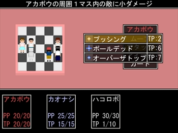
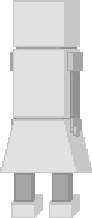
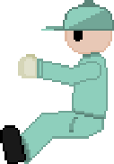

体験版
現在、ふりーむにて体験版を公開しております。
気になる方は、
こちらからダウンロードして、是非プレイしてみてください！
※体験版は、青色の街終了までを収録しています。
ストーリー
教会で目覚めた3人。彼らは皆、記憶が無かった。
自分が誰であるか。この街は何なのか。そしてどうしてここに居るのか。
全てを知っている記録屋と、未来を占えるムラサキに話を聞き、無色の街を目指す3人。
そして無色の街で話される、1つの真実。
彼らが選ぶ選択は、どちらか……。
この話は、フィクションです。
登場する人物名、場所、関連しそうな物は、全て無関係です。
システム
このゲームの戦闘システムは、チェスをモチーフとして作られています。
各キャラ達は、決まった移動ルールに従い、5×5の盤面上で戦います。

基本はコマンド選択式のバトルですが、その攻撃方法が大きく異なります。
例えば「プッシング」という技なら、キャラの上下左右の1マスに居る敵に攻撃します。
他にも、十字方向や斜め方向。1マス、2マス、1方向と全方向と、種類があります。
そして敵の移動や攻撃にも、ルールや範囲が決まっています。
プレイヤーは、その2つを上手く利用して、バトルをクリアしていく必要があります。
キャラクター
クリックすると、各キャラクターの説明が表示されます。


アカボウ
帽子を被っている少年。表情は見えない。
外見から小学生位だと推定出来る。
カオナシ
お面を付けている少年。
中学校時代の制服を着ている。
ハコロボ
ロボットの青年。3人の中で最も年を取っている。
外見は機械だが、中身が機械仕掛けかどうかは不明である。
記録屋
作業服の着ぐるみを着た、謎の存在。
主人公達の記憶を受け取って預かってセーブする。
ムラサキ
黒のローブを来た女性。
占い師をやって街を転々としているが、その正体は不明。
リンク
スター(DIGITAL GAMES)のホームページ